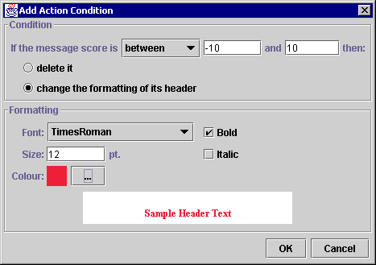

The Action Condition Editor |
Use the Relevance Rule Configuration Dialogue to add or edit a relevance rule. This will display the Relevance Rule Wizard. Click on the add or edit button in step 3 to bring up the action condition editor. For more information about action conditions, see the introduction.

Use the pulldown listbox to select a range type (less than, greater than, between or equal to). If the range type is set to between, two input boxes will be available for the range values. Enter the range values: positive or negative integer values.
Click on a radio button "delete it" or "change the formatting of its header" to determine what to do with message headers which meet your condition range. If you choose "change the formatting...", the formatting panel will become enabled.
Allows you to change the font, size and colour of the header text for messages which meet your range condition. Use the "..." button next to colour to bring up a colour chooser. The fonts available in the Font: pull down menu are those which Java programs can use directly, and may not include all the fonts on your system. It is possible to configure Java to use additional fonts: please see the Java documentation for more information.